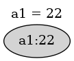

Project 1
Due: Sep 23 by 11:59p
Important Reminder: As per the course Academic Honesty Statement, cheating of any kind will minimally result in your letter grade for the entire course being reduced by one level.
This document first provides the aims of this project followed by the necessary background. It then lists the requirements as explicitly as possible. This is followed by a log which should help you understand the requirements. Finally, it provides some hints as to how those requirements can be met.
Aims
The aims of this project are as follows:
To ensure that you have set up your VM as specified in the VM Setup and Git Setup documents.
To get you to write a non-trivial JavaScript program.
To allow you to familiarize yourself with the programming environment you will be using in this course.
To make you design an in-memory indexing scheme.
To expose you to the power of recursive programming.
To introduce you to Test-Driven Development TDD.
Background
This project involves building the internals of a spreadsheet with all data stored entirely in memory.
The reasons spreadsheets are extremely popular include:
An intuitive GUI.
An intuitive model of computation which just works. This model is so intuitive that non-programmers use it without realizing that they are programming.
In this project, we will concentrate on (2).
Visually, a spreadsheet is identified by a grid of cells with each cell identified by its column and row coordinates. The column coordinate is specified by a letter a, b, \(\ldots\), z while the row coordinate is specified by an integer 1, 2, \(\ldots\), 99. So the first cell would have coordinates a1 and the last cell would have coordinates z99.
The model of computation behind spreadsheets is data-driven programming. The computation is driven entirely by the dependencies within the data rather than some predetermined order. So if a change is made to a particular spreadsheet cell \(c\), then that change is automatically propagated to all other cells which depend directly or indirectly on \(c\).
Assuming no cyclic dependencies, a spreadsheet can use a Directed Acyclic Graph or DAG to maintain the dependencies between its data cells. The use of a DAG will minimize the computation necessary to respond to a data change.
The following sequence of diagrams show how the DAG evolves in response to updates made to a spreadsheet:
A cell a1 is given a constant value.
We can add a formula referring to a cell b1 which has not yet been given a value because the value of a cell defaults to 0.
In the above figure, cell a2 is dependent on cells a1 and b1 while cells a1 and b1 are prerequisites for cell a2.
When we actually define b1, a2 is automatically updated because a2 is dependent on b1.

We can extend the dependency chains to a new cell a3:

When we change a1, those changes are propagated to all its direct and indirect dependencies.
Besides the underlying DAG, another aspect of spreadsheets worth noting is the location independence of formula; i.e. a formula can be copied from one cell to another and doing so will adjust the cell references in the formula. So for example, if the above formula a3 = a1 + a2 is copied over to cell c5, then it would be adjusted to c5 = c3 + c4.
In some situations, this adjustment is not desired. This can be specified by preceeding the corresponding coordinate by a $ to fix that coordinate. For example, if the formula f2 = e5 + $e3 + e$4 + $e$6 is copied over to g7, the copied formula would be g7 = f10 + $e8 + f$4 + $e$6,
Requirements
You must push a submit/prj1-sol directory to your master branch in your github repository such that typing ./index.mjs within that directory is sufficient to run your project.
You are being provided with an index.mjs and cli.mjs which provide the required input-output behavior. You are also being provided with a parser which can parse spreadsheet formulae. What you specifically need to do is add code to the provided spreadsheet.mjs source file as per the requirements in that file.
Additionally, your submit/prj1-sol must contain a vm.png image file to verify that you have set up your VM correctly. Specifically, the image must show an x2go client window running on your VM. The captured x2go window must show a terminal window containing the output of the following commands:
$ hostname; hostname -I $ ls ~/projects $ ls ~/cs544 $ ls ~/i?44 $ crontab -l | tail -3
Interaction Log
The behavior of your program is illustrated in the following annotated log.
$ ./index.mjs >> a1 = 22 { a1: 22 } >> a2 = a1 * b1 //b1 not yet defined; defaults to 0 { a2: 0 } >> b1 = 3 { a2: 66, b1: 3 } //b1 now defined; a2 recomputed >> a3 = a1 + a2 { a3: 88 } >> a1 = 3 //a1 redefined; a2 and a3 recomputed { a1: 3, a2: 9, a3: 12 } >> a1 = a3 //indirect circular references detected CIRCULAR_REF: circular ref involving a1 >> a1 = a3 - //syntax errors detected SYNTAX: unexpected token at '<EOF>': expected 'num' >> a1=a1 //direct circular refs detected CIRCULAR_REF: circular ref involving a1 >> //indicate EOF on stdin by typing ^D $
Provided Files
The prj1-sol directory contains a start for your project. It contains the following files:
- spreadsheet.mjs
This skeleton file constitutes the guts of your project. You will need to flesh out the skeleton, adding code as per the documentation. You should feel free to add any auxiliary function or method definitions as required.
- index.mjs and cli.mjs
These files provide the input-output behavior which is required by your program. It imports spreadsheet.mjs. You should not need to modify these files.
- expr-parser.mjs
A parser for spreadsheet formulae. You will need to understand the behavior of the exported parse() function which is documented in the first comment.
- util.mjs and limits.mjs
Utility routines and definitions for the spreadsheet limits. You should not need to modify these file.
- app-error.mjs
A simple class which encapsulates an error having a code and message. You should not need to modify this file.
- Test files
This directory contains tests for the spreadsheet, scanner and parser using the mocha testing framework and chai assertions. You may add your own tests to this directory.
- README
A README file which must be submitted along with your project. It contains an initial header which you must complete (replace the dummy entries with your name, B-number and email address at which you would like to receive project-related email). After the header you may include any content which you would like read during the grading of your project.
Design and Implementation
The following information may be useful when working on this project.
Use of ES6 Classes
At the time of assigning this project, JavaScript objects and ES6
classes will not have been covered in detail in the course. However,
you should be able to use ES6 class syntax without needing to
understand the finer points.
Note that the class syntax is a relatively recent addition to JavaScript and is syntactic sugar around JavaScript's more flexible object model. Note that even though the use of this class syntax may make students with a background in class-based OOPL's feel more comfortable, there are some differences worth pointing out:
No data members can be defined within the class body. All "instance variables" must be referenced through the this pseudo-variable in both constructor and methods. For example, if we want to initialize an instance variable cells in the constructor() we may have a statement like:
this.cells = {};
There is no implicit this. If an instance method needs to call another instance method of the same object, the method must be called through this.
There is no easy way to get private methods or data. Instead a convention which is often used is to prefix private names with something like a underscore and trust class clients to not misuse those names.
Tests
The provided code contains tests for the provided scanner and parser as well as tests for the spreadsheet you are working on. The spreadsheet tests will initially fail; as you develop your code, you will make them succeed, thus practising TDD. You are welcome to add more tests (note that different tests than those provided here may be used when grading your project).
If you set up your package.json as instructed, typing npm run test should run all tests using the <https://mochajs.org/> mocha testing framework.
Cell References vs Cell ID's
It is a good idea to distinguish between references to a spreadsheet cell and the ID for a spreadsheet cell.
A cell reference is used within a formula to refer to a cell. It can be a fully relocatable reference like f6, a partially relocatable reference like $f6 or f$6 or a non-relocatable reference like $f$6.
A cell ID could be any string which uniquely identifies a cell. It seems convenient to reuse the same identification scheme as that used externally; i.e. simply use ID's like f6 to identify a cell. So a cell ID looks like a fully relocatable cell reference. Note that a cell ID cannot contain any $ characters.
Spreadsheet Representation
The visual representation of a spreadsheet is a 2-dimensional grid which seems to map naturally into using a 2-dimensional array as the internal representation. But since the grid is usually extremely sparse, a spreadsheet is better represented simply as a JavaScript object mapping cell ID's to information about a cell.
The information associated with a spreadsheet cell could include properties like the following:
- id
The ID associated with the cell.
- expr
A string containing the formula for the cell.
- value
A number containing the currently computed value for the cell. Should default to 0.
- dependents
A Set of id's for cells which are directly dependent on this cell. These sets specify the edges in an adjacency list representation of the dependency DAG.
- ast
A cache of the results of parsing the expr formula.
In some situations it may also be useful to have a cell contain a reference back to its containing spreadsheet.
Evaluating the Value for a Cell
Given an arithmetic expression represented as a string, its essential structure can be captured by an abstract syntax tree or AST. Note that the expressions "1 + 2*3" and "(1 + (2*3))" both have the same essential structure and will be represented using equivalent AST's. These AST's will be different from the AST for the expression "(1 + 2) * 3".
The formulas to be handled by this project are arithmetic expressions involving the arithmetic operators +, - (both prefix and infix), *, and /, functions like max() and min(), as well as numbers and cell references. The latter two will be represented as AST leaves, whereas the operators and functions will be represented as internal nodes of the AST.
Evaluating the value for a cell can be done using a simple bottom-up recursive traversal of the AST for the formula associated with that cell. This can be done using a simple case analysis on the type of the AST node.
The node represents a number: the value is simply that number.
The node represents a cell reference: the value is simply the value of the cell referenced by the AST.
The node represents the application of an operator or function: the value is the result of applying that operator or function to the result of recursively evaluating the children of that node.
Maintaining the Dependency DAG
When a cell \(C\) is updated with a new formula and corresponding AST, the following steps need to be taken to maintain the dependency DAG:
If \(C\) already has an associated old formula, then that old formula should be traversed for references to prerequisite cells and \(C\) needs to be removed as a dependent of the prerequisite cells. This ensures that the DAG does not contain spurious dependencies
The new formula needs to be traversed for references to prerequisite cells and \(C\) needs to be added as a dependent of those prerequisite cells.
When traversing formula, it is easier to perform a recursive traversal of the AST associated with the formula rather than the string formula.
For example, assume that a4 which has the formula a3 * b3 and is being updated with a new formula a4 = a3 + a5. The old formula a3 * b3 must be traversed to remove a4 from the dependents for the referenced prerequisite cells a3 and b3. Then the new formula a3 + b5 must be traversed to add a4 to the dependents for the referenced prerequisite cells a3 and b5.
Error Recovery
An update to a spreadsheet will entail multiple updates to individual properties of different cells, but the overall spreadsheet update should be atomic; i.e. an update either succeeds completely or leaves the spreadsheet totally unchanged when an error is detected.
For example, assume that cell a1 is set to 22 and a2 is set to a1 + 1 which is 23. Note that a2 is dependent on a1 and any update to a1 will result in update to a2. Assume that a1 is attempted to be set to the formula a2 * 2 introducing a circular dependency. Depending on the implementation, it is possible that a1 will be set to 46, before the circular dependency is detected and the update aborted. Such partial updates are not acceptable and need to be rolled back.
So when an error is detected, it is necessary to completely rollback any partial updates. Some possibilities to implement this rollback:
Implement an Undo Capability
Before updating a property of a spreadsheet cell, remember the previous version of the property in some kind of undo object which tracks the cell, property name and original value. Add each undo object to a stack of undo objects associated with the spreadsheet.
If the full spreadsheet update succeeds, simply discard the undo objects. OTOH, if an error occurs then use the saved stack of undo objects to restore the state of the spreadsheet to what it was before the attempted update.
Note that when a property contains a mutable data structure like an array or a set, remembering the previous state of that property will require making a deep copy of the data structure before mutating it.
One advantage of this approach is that its use need not be restricted only to rollback after an error; it can also be used for implementing an external undo/redo capability.
Note that this is related to the Memento pattern.
Use Shadow Cells
When it is necessary to update a cell, do not make the update directly to the cell. Instead implement the update on a shadow cell which is a deep copy of the original cell. Route subsequent reads and writes for that particular cell to the shadow cell.
If the full spreadsheet update succeeds, then copy the shadow cells back into the original cells. OTOH, if an error occurs then simply discard the shadow cells.
Use Immutable Data Structures
Using persistent data structures for implementing the spreadsheet would obviate the necessity to undo updates after an error.
Hints
You should feel free to use any of the functions from the standard library; in particular, functions provided by the Array, String, Set and Math objects may prove useful. You should not use any nodejs library functions to make it possible to run this code within the browser in future projects. You should also not need to include additional npm packages.
The following steps are not prescriptive in that you may choose to ignore them as long as you meet all project requirements.
If you have not already done so, set up your course VM as per the instructions specified in the VM Setup and Git Setup documents.
Understand the project requirements thoroughly including the first comment in spreadsheet.mjs. Verify your understanding by looking at the provided interaction log.
Make sure you understand the behavior of the parse() function provided by expr-parser.mjs including the structure of the returned AST. This is documented in the first comment in that file.
Decide on how you will implement error recovery.
Look into debugging methods for your project. Possibilities include:
Logging debugging information onto the terminal using console.log() or console.error().
Use the chrome debugger as outlined in this article. Specifically, use the --inspect-brk node option when starting your program and then visit about://inspect in your chrome browser.
There seems to be some problems getting all necessary files loaded in to the chrome debugger. This may be due to the use of ES6 modules. When your program starts up under the debugger use the return from current function control until the necessary source files are available in the debugger at which point you can insert necessary breakpoints.
It is well worth spending a few minutes setting up the chrome debugger as it could save you a lot of debugging time.
Start your project by creating a new prj1-sol branch of your i444 or i544 directory corresponding to your github repository. Then copy over all the provided files:
$ cd ~/i?44 $ git checkout -b prj1-sol #create new branch $ mkdir -p submit #ensure you have a submit dir $ cd submit #enter project dir $ cp -r ~/cs544/projects/prj1/prj1-sol . #copy provided files $ cd prj1-sol #change over to new project dir
Set up this project as an npm package:
npm init -y #create package.json npm install --save-dev \ #install development dependencies mocha chai #for testing
Replace the contents of the script property in the newly created package.json with
"test": "mocha test/", "debug-test": "mocha --inspect-brk test/"
[Be careful with adhering to JSON syntax.]
This will set up testing scripts. You should now be able to run the provided parser and scanner tests using the command npm run test.
Commit into git:
$ git add . #add contents of directory to git $ git commit -m 'started prj1' #commit locally $ git push -u origin prj1-sol #push branch with changes #to github
[To avoid loosing work, you should get into the habit of periodically commit'ting your work and push'ing it to github.]
Replace the XXX entries in the README template and commit to github:
$ git commit -a -m 'updated README' $ git pushCapture an image to validate that you have set up your course VM as instructed. Within a terminal window in your x2go client window, type in the following commands:
$ hostname; hostname -I $ ls ~/projects $ ls ~/cs544 $ ls ~/i?44 $ crontab -l | tail -3
Use an image capture program on your workstation to capture an image of your x2go client window into a file vm.png. The captured image should show the terminal window containing the output of the above commands as part of the x2go client window. Move the vm.png file from your workstation to your VM's ~/?44/submit/prj1-sol directory (you can use scp; if your workstation cannot connect directly to your VM, then do a 2 step copy using remote.cs as an intermediate).
Add, commit and push the vm.png file.
You should be able to run the project, but except for error checking performed by cli.mjs, all cell definitions will simply return empty objects until you replace the @TODO sections with suitable code.
$ ./index.mjs >> a1 input must be of type "cellId = expr" >> aa1 = 3 SYNTAX: bad cell ref aa1 >> a1 = 3 {} >> #type ^D to return to the shell $
You should be able to run the tests using npm run test. All the parse and scan tests should succeed, but all the spreadsheet tests will fail. You will need to add code to make all the tests green.
Open your copy of the spreadsheet.mjs file in your project directory. It contains
Imports of auxiliary modules.
A skeleton Spreadsheet class which is exported as the
default exportof the file. It contains a static factory method which simply calls a skeleton constructor as well as a skeleton for the required eval() method.A table mapping fn strings to the corresponding functions.
Some points worth making about the provided code:
All the methods have been declared async. This is not needed for this project, but will be necessary for subsequent projects. You can safely ignore the async declarations and write code normally.
For error handling, the convention used is that all user errors should be thrown as AppError objects (for example, see the code in the match() method within the ExprParser
class.if (circular dependency detected) { const msg = `cyclic dependency ...`; throw new AppError('CIRCULAR_REF', msg); }
This allows the calling code to distinguish between exceptions caused by intentional error reporting and those caused inadvertently, allowing the former to be reported as simple error messages whereas the latter will be reported with a full stack trace. This makes it much easier to debug your code when you get unintentional exceptions.
Create an auxiliary CellInfo class to package up the information associated with a spreadsheet cell.
Add code to the Spreadsheet
constructorto set up an object mapping cell id's to CellInfo's.Add code to the eval() method to print out the AST for a formula:
Parse the baseCellId expr formula using the provided parse() function into an AST.
Print out the AST using
console.log(inspect(ast, false, Infinity));
Execute the project with input like a1 = 22 or a2 = 3 * ($a4 + b$5) and you should see the printed AST on your console.
As you develop the project, you may find it useful to print AST's in order to understand their structure.
Write an auxiliary method to evaluate an AST which simply contains a number. This auxiliar method should do a switch on the type of the AST node. For now, simply handle the case when the type is num and simply return the node's value property as the evaluation.
If you hook up your auxiliary function into the main eval() function correctly, you should be able to make the first spreadsheet test green!
In this step you will evaluate spreadsheet formulae like a1 = 1 + 2 * -3 which do not contain any cell references.
Extend your AST evaluation method to handle app nodes. Recursively evaluate the kids to get a list of kid values. Then lookup the function corresponding to fn in the provided FNS table. Then simply apply the returned function to the list of kid values using the spread operator.
You should now be able to make the second spreadsheet test green!
Now extend your evaluation function to handle cell references. The AST represents cells using (possibly relative) row and column indexes, but calling the toString(baseCellId) on that AST node will return the cell coordinates as a user-oriented ref like c33 or $d23. Use the cellRefToCellId() utility method to convert from the cell reference to a cell id and then look up the cell value using your spreadsheet data structure.
This should make the next two tests green.
Set up your spreadsheet data structure so that looking up the value of an unassigned cell returns 0; that should take care of one more test.
Now set up dependency tracking.
When a formula is being assigned to a base call \(B\) which already has an existing formula, remove \(B\) from the dependents of cells referenced by the existing formula.
When evaluating a cell reference to cell \(C\) in the formula for base cell \(B\), add \(B\) to the dependents of cell \(C\).
When a cell is evaluated, all its dependent cells need to be evaluated too. But these evaluations can cascade. This can be done using a depth-first search. To detect cyclic dependencies, maintain a set of the cell id's which are currently being evaluated and stop the cascade when an attempt is made to re-evaluate a cell which is already on the list.
Modify your code to add in your chosen error recovery strategy.
Iterate until you meet all requirements and all tests are green.
It is a good idea to commit and push your project periodically whenever you have made significant changes. When it is complete please follow the procedure given in the git setup document to submit your project to the TA via github.